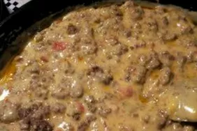

Best Cheese Dip

Description
What more could you want? Creamy, cheesey, dippy... dip.
This warm recipe is great for a cool day, or any day really.
Ingredients
- Meat: ground beef or ground pork sausage
- Diced onion
- 1 can diced tomatoes with green chile pepper
- 1 can condensed cream of mushroom soup
Steps
-
Cook the ground meat and onion in a skillet. Transfer the meat to a slow cooker.
-
Layer the cheese cubes on the meat mixture.
-
Blend the canned tomatoes until smooth, then pour over the cheese with the soup.
-
Cook on High until the cheese is completely melted.
Recipe from allrecipes.com.